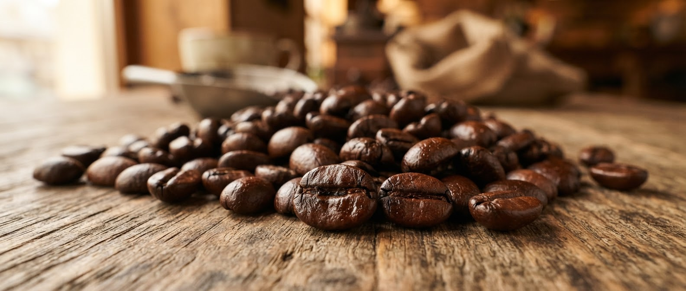
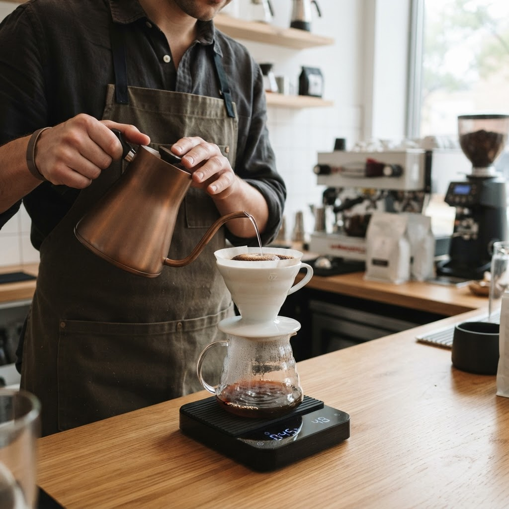
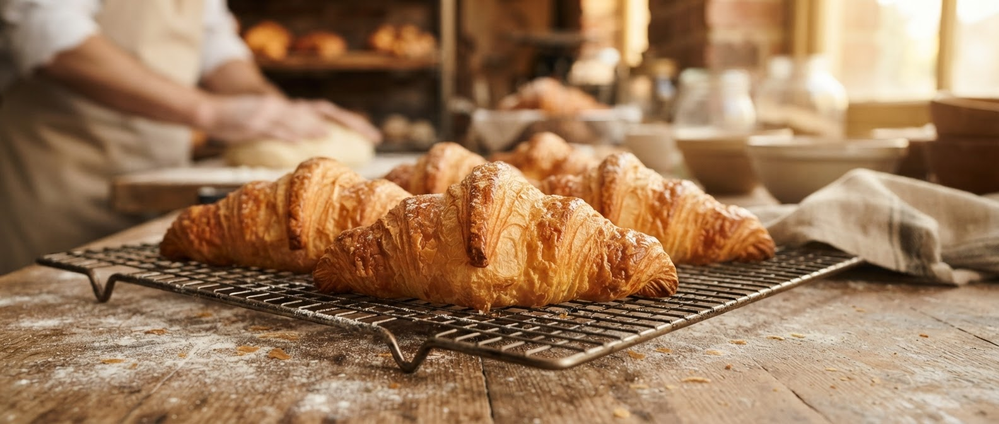
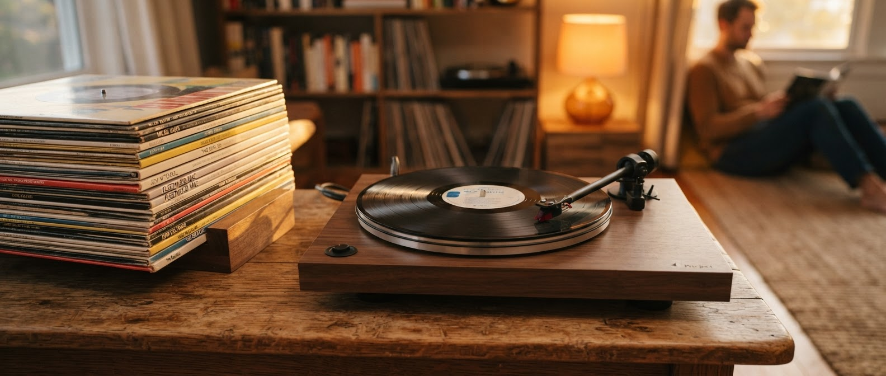
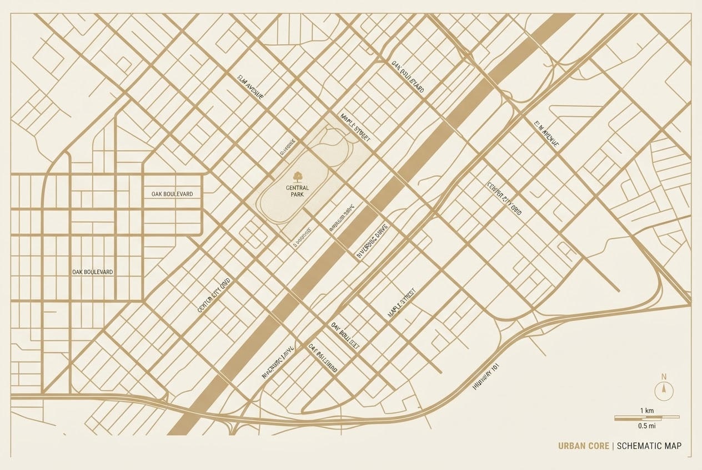

Свежая обжарка
Обжариваем зерно небольшими партиями, чтобы сохранить его природную сладость. Раскрываем профиль каждого сорта и подбираем идеальный способ заваривания.
Уютное пространство, любимые сорта кофе и бережная локальная обжарка. Место, где можно замедлиться и насладиться моментом.
Посмотреть меню
Наш подход
В «Зерно» мы относимся к кофе не просто как к напитку, а как к искусству. Мы лично выбираем лучшие зёрна со свежих ферм Эфиопии, Колумбии и Бразилии, сохраняя уникальный терруар происхождения в каждой чашке.
Наши бариста ежедневно настраивают рецепты под каждую партию обжарки. Мы создаём пространство, свободное от суеты мегаполиса — место, где вы можете замедлиться и насладиться естественной насыщенностью настоящего кофе.
Почему выбирают нас

Обжариваем зерно небольшими партиями, чтобы сохранить его природную сладость. Раскрываем профиль каждого сорта и подбираем идеальный способ заваривания.

Наши пекари приходят на рассвете, чтобы к вашему утреннему кофе уже были готовы тёплые круассаны, хрустящие снаружи и нежные внутри.

Тихий плейлист, мягкий свет, много натуральных оттенков, любимые журналы и виниловые пластинки. Пространство, в котором хочется остаться подольше.
Контакты
ул. Кофейная, 12, Москва
+7 (495) 123-45-67
Пн–Пт: 8:00–21:00
Сб–Вс: 9:00–22:00
